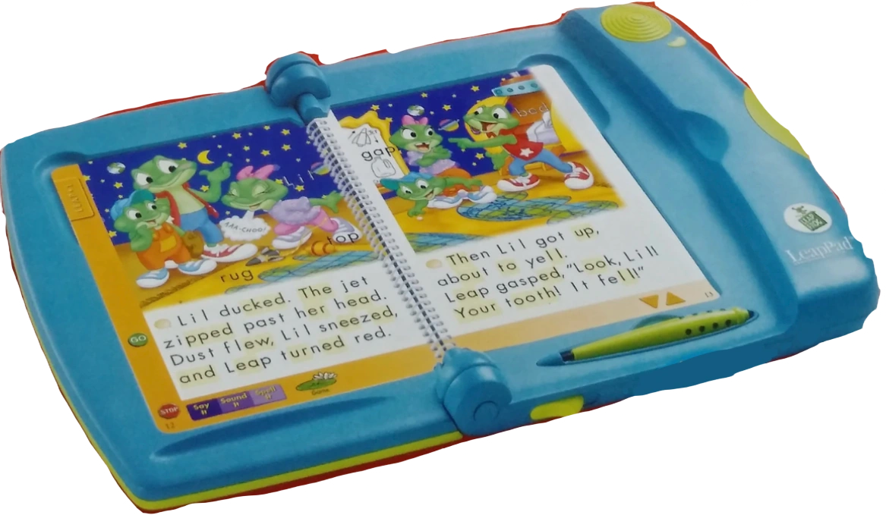

Andrew's Blog
Andrew's Blog


Andrew Nolan
2023-07-07
Serious games are a burgeoning research area in educational technology. They provide an engaging new format for learning that is worthy of exploration. I have been learning more about them recently and I'd like to share some of that with you.
The first question we need to answer today, what is a serious game?
Is it something like chess that is respected all over the world and has high-stakes tournaments and world champions?
Is it something like eSports that are played competitively and have a lot of money involved?
Nope, neither of those. These are both examples of very unserious games.
Games you can find on the children's toy LeapPad are super serious games.
Let's explain why that is...
serious games as a term was coined by Clark Abt in his aptly named 1970 book, serious games. In it, he defines games as:
"Games [that] have an explicit and carefully thought-out educational purpose and are not intended to be played primarily for amusement" - Clark Abt, page 9, serious games 1970
However, I think that definition is a little intense, and seemingly Clark Abt did too. In the next sentence he goes on to say:
"This does not mean that serious games are not, or should not be, entertaining" - Clark Abt, the next sentence of page 9, serious games 1970
Since 1970, the field of serious games has evolved quite a bit. A modern definition I really like is from the French researchers Djauti, Alvarez, and Jessel.
"[serious games] merge a non-entertaining purpose (serious) with a game structure (game)" Djauti, Alvarez, and Jessel, Classifying serious games: the G/P/S model
Simply put, a serious game is a game intended for a purpose beyond education.
If you are around my age, you probably remember the LeapPad. It was the top selling educational toy of 2000 and 2001 and it has had a strong legacy ever since. Cementing the LeapFrog company as one of the top purveyors in children's educational gaming.
The LeapPad used book and cartridge pairs to make interactive reading and phonics lessons for children. The book helped kids learn to sound out words. They also included games to reinforce the ideas leveraging their own original characters as well as popular 3rd party properties.
The history and technology behind the LeapPad is really cool. If you want to learn more about it I highly recommend checking out this YouTube video from Billiam:
Serious gaming was coined in the seventies and most of the examples we are going to talk about today are relatively modern too. But, serious games as a concept date back a long time. Kriegsspiel is a war game that was invented by the Prussians in the 18th century. These games were used to train officers on battlefield tactics and strategies. It is considered the first modern war game.
There is a long history of games used for simulating warfare. 5,000 years ago in China, Wei-Hai (the Encirclement game) was invented and is considered one of the earliest war games. It later evolved into the modern game Go that we have today. Some people would argue games like Chess or Caturaṅga
Flight simulators can be used to train armies as well. The US Air Force even has a collection of games for training skills that they call the Aircade.
Other flight simulators originally existed as serious games. Although Microsoft Flight Simulator is now more of an entertaining game. Originally, in 1982, the first release of the Simulator was a tech demo and a true simulation. Intended to model flight, not necessarily provide entertainment.
FoldIt might be the most exciting example I found. FoldIt is a protein-folding puzzle game developed by the University of Washington Biochemistry department.
The goal of the game was to fold the proteins as perfectly as possible. The cool trick is that the puzzles were based on unsolved biology research problems and the best scoring folds would be analyzed by researchers to measure their usefulness and practicality in real life. The results found by players have been very impactful. A 2010 paper in Nature claims FoldIt's players have created solutions that match or outperform computer algorithmically generated solutions.
In 2011, players produced an enzyme model that could be used for molecular replacement of the Mason-Pfizer monkey virus. This was an unsolved problem for scientists for over 15 years, the FoldIt community solved it in 10 days. This retrovirus is similar to HIV/AIDS and has helped researchers make progress on curing the disease.
I love this example because it can show how powerful games can be at promoting problem solving and critical thinking. Applying the outcomes to the real world makes them even more impactful.
Admittedly, I do not know too much about biology. If this game sounds interesting to you, I definitely recommend checking out more about FoldIt. The Wikipedia article is a good place to start.
One last example I want to talk about is Minecraft Education Edition.
Minecraft Education edition provides additional features to the game Minecraft that are tailored to educational activities. They have coursework created for STEM, Coding, Social-Emotional Learning, History, Language Arts, 21st Century Skills, and more!
Something I found particularly interesting was a recent study conducted in 6 Australian primary schools. The instructors used the Minecraft based curriculum to teach algebra and geometry. The results were very promising.
Among the instructors, all saw value added to the lessons by using Minecraft. This value was considerable. No teachers claimed no value was added. As we can see in the graph below. Teachers said the Minecraft assignments added value.
The results from a student perspective were also strong. This graph shows that the students' engagement with math resources increased significantly with the game based approach.
I think the most exciting results of this study are the benefits to the students' confidence. With standard math lessons, students felt pretty confident about their math ability. Most considered themselves good, but not many thought of themselves as outstanding at math.
Following the Minecraft lessons, student confidence surged. We can see in the graph below a significant shift upwards in student self-confidence.
I think this is a super promising result. serious games have been considered as an alternative or additional approach to traditional education for a long time. As we mentioned, serious games have been a term since the seventies. Unfortunately, sometimes games claim to be for learning but have no real value. Luckily, in recent times there has been an increase in academic research into this topic, and so far it has been successful. Studies like this one on Minecraft for Education show that games can provide serious value to learners. This is an exciting path to continue looking into.
You have probably heard the term gamification, it is another popular concept in online learning. Gamification uses parts of games for more "serious" purposes. But, it is important to understand the distinctions between serious games and gamification.
Gamification is the act of using components of games in non-game settings. These often work as psychological motivators and can give the learner a sense of reward and progression. The key is that these techniques are used to enhance traditional learning. Without the gamification elements an education concept still exists. The gamification adds elements to improve learners' enjoyment and engagement.
To use a Silicon Valley startup term, serious games disrupt traditional learning. They fall into a category known as Game Based Learning. Unlike gamification, with serious games the game is the learning medium. Without the game there is no learning.
These games are also typically designed with a specific outcome or goal in mind. With gamification, you could add the same features (such as lives, or score, or a leaderboard) to any learning topic. It could be used for math, English, French, science, anything! Serious games design the game around the topic to be learned.
Let's take a look at an example of two tools for learning another language that can really illustrate the difference between gamification and serious games.
If you've tried to learn or practice a new language in the age of smartphones, you are probably familiar with Duolingo. Duolingo provides a gamified language learning platform consisting of lessons, quizzes, translation exercises, and readings to help you learn one of the many languages they offer. It is gamified through the inclusion of scores, lives, and leaderboards. These elements encourage you to keep coming back and learning on the app.

The game Kloo (not to be confused with the murder mystery game Clue) is a serious board game designed to help teach and practice languages. Players score points and progress through the board by creating and translating sentences from cards in their hands. Each card has context clues and arrows to help you form proper sentences.
Both Duolingo and Kloo are designed for language learning. However, one uses a traditional learning format enhanced with gamified elements while the other leverages a game as the entire learning format. Both have their benefits and can often be extra effective when used together.
If you've made it this far in the blog, thanks! But also, if you've made it this far, I am sure you are already starting to understand the benefits of serious games.
There are four key benefits I want to highlight:

serious games provide an alternate method for delivering learning material. They have been around for a while, but research interest in them is rapidly growing. From what we've seen the benefits can be massive. I hope this blog has taught you something interesting and sparked an interest in games for learning. Or maybe it even introduced you to a game you want to try yourself!
Enjoyed this article? Hoping for more Ed Tech topics? Subscribe to the RSS Feed!